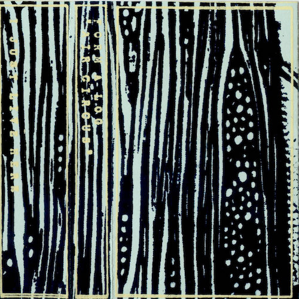

2010
<a href="http://dinnermusic.bandcamp.com/album/clam-date">Clam Date by Rick Weaver</a>
<a href="http://formalog.bandcamp.com/album/magic-touch">Magic Touch by Form a Log</a>

<a href="http://formalog.bandcamp.com/album/air-circus">Air Circus by Form a Log</a>